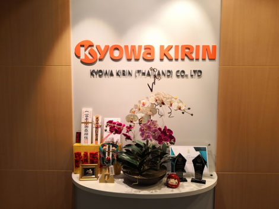

Cutting-edge,
technology-driven science,
focused on four key
categories.
Kyowa Kirin (Thailand) makes marketing in the 3 categories of the product group.
Nephrology, Oncology, Immunology & Allergy
About Us
Kyowa Kirin is a research-based life sciences company with special strengths in biotechnology. We are opening up the path toward the development of new biologics, and developing new medicines to meet medical needs that are currently not being satisfied by existing pharmaceuticals. Kyowa Kirin (Thailand) Co., Ltd. has followed a commitment to help and participate in health care. For the better quality of life of patients, our passion and energy around our core purpose of "commitment to life" sets us apart.
Overview
Kyowa Kirin Company Limited is principally engaged in the production factory, Pharmaceutical research and development including marketing, and Import-Export of pharmaceutical products. (https://www.kyowakirin.com)
ASEAN countries and Asia will be under the supervision of Kyowa Kirin Asia Pacific Pte. Ltd. (https://www.kyowakirin.com/singapore/index.html)
For Thailand branch is Kyowa Kirin (Thailand) Co., Ltd., the principally engaged in the import of pharmaceutical products for medical purposes.
The address is 323 United Center Building, 20th floor, room 2003B, Silom road, Silom, Bangrak, Bangkok 10500.
- 